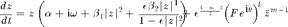
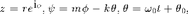
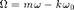

rStarDrivenkm
[rStar, psiStar, stability, stabType] = rStarDrivenkm(alpha, beta1, beta2, epsilon, forcing amplitude, Omega, k, m, All)
Finds r*, psi*, stability (1 or 0), and stability type (0-4) numerically for a canonical oscillator driven by a sinusoidal input via a nonlinear coupling for k:m mode-locking. Omega = m*omega_osc - k*omega_input is the deviation from the exact integer relationship (k:m) between the oscillator and the input. Set the optional input argument 'All' to 1 (or any nonzero value) to get both stable and unstable fixed points. (Default for All is 0, that is, rStarDrivenkm outputs only stable fixed points.)
stability: 1 = stable, 0 = unstable
stabType: 4 = stable node, 3 = stable spiral, 2 = unstable node, 1 = unstable spiral, 0 = saddle point
Contents
- Equation
- Check input arguments
- Choose r* function to use
- R* FUNCTION FOR FULLY EXPANDED MODEL (NONZERO B2)
- Find steady-state amplitudes numerically
- Find corresponding relative phases
- Get Jacobian matrix
- Calculate stability type
- Prepare output
- R* FUNCTION FOR TRUNCATED MODEL (B2 = 0)
- Find steady-state amplitudes numerically
- Find corresponding relative phase
- Get Jacobian matrix
- Calculate stability type
- Prepare output
Equation

where  and 
function [rStar, psiStar, stability, stabType] = ... rStarDrivenkm(a, b1, b2, e, F, W, k, m, All)
Check input arguments
if F <= 0 error('F must be positive') end if mod(k,1) || mod(m,1) || k <= 0 || m <= 0 error('k and m must be positive integers') end if nargin < 9 All = 0; % default: only stable points end
Choose r* function to use
if b2 % for fully expanded model with nonzero b2 [rStar, psiStar, stability, stabType] = ... rStarDrivenkmFull(a, b1, b2, e, F, W, k, m, All); else % for truncated model with b2 = 0 [rStar, psiStar, stability, stabType] = ... rStarDrivenkmTrunc(a, b1, e, F, W, k, m, All); end
R* FUNCTION FOR FULLY EXPANDED MODEL (NONZERO B2)
function [rStar, psiStar, stability, stabType] = ... rStarDrivenkmFull(a, b1, b2, e, F, W, k, m, All)
warningOn = 0; % set to 1 to get warnings on nonreal psi*
Find steady-state amplitudes numerically
if m == 1 r = sqrt(roots([e^2*(b2-b1)^2,... 2*e*(b2-b1)*(b1-e*a),... b1^2+e*(2*a*b2-4*a*b1+e*a^2+e*W^2),... 2*(a*b1-e*a^2-e*W^2)-e^(k+1)*F^(2*k),... a^2+W^2+2*e^k*F^(2*k),... -e^(k-1)*F^(2*k)])); else order = max(4,m); coeff = zeros(1,order+1); coeff(end-4:end) = [ e^2*(b2-b1)^2,... 2*e*(b2-b1)*(b1-e*a),... b1^2+e*(2*a*b2-4*a*b1+e*a^2+e*W^2/m^2),... 2*(a*b1-e*a^2-e*W^2/m^2),... a^2+W^2/m^2 ]; coeff(end-m:end-m+2) = coeff(end-m:end-m+2) + ... [-e^(k+m)*F^(2*k), 2*e^(k+m-1)*F^(2*k), -e^(k+m-2)*F^(2*k)]; r = sqrt(roots(coeff)); end r = r(find(abs(imag(r)) < eps('single'))); % take only real roots r = real(r); r = r(find(r~=0)); % remove zero r = sort(unique(r),'descend'); % remove multiple roots r = r(find(r < 1/sqrt(e))); % take r's below the asymptote if isempty(r) % when no r* return empty matrices rStar = []; psiStar = []; stability = []; stabType = []; return end
Find corresponding relative phases
signPsi = (W >= 0)*2 - 1; psi = signPsi*acos(-(a*r + b1*r.^3 + e*b2*r.^5./(1-e*r.^2))... ./(e^((k+m-2)/2)*F^k*r.^(m-1))); if warningOn [maxImag,indIm] = max(abs(imag(psi))); if maxImag > eps('single')*100 disp(['Warning (rStarDrivenkm): significant nonzero imaginary part'... ' in psi (' num2str(maxImag) ') for W = ' num2str(W)]) disp(['(r* = ' num2str(r(indIm)) ', psi* = ' num2str(psi(indIm)) ')']) end end psi = real(psi);
Get Jacobian matrix
J11 = a + 3*b1*r.^2 + e*b2*r.^4.*(5-3*e*r.^2)./(1-e*r.^2).^2 ... + (m-1)*e^((k+m-2)/2)*F^k*r.^(m-2).*cos(psi); J12 = -e^((k+m-2)/2)*F^k*r.^(m-1).*sin(psi); J21 = -m*(m-2)*e^((k+m-2)/2)*F^k*r.^(m-3).*sin(psi); J22 = -m*e^((k+m-2)/2)*F^k*r.^(m-2).*cos(psi); delta = J11.*J22 - J12.*J21; % determinant of Jacobian tau = J11 + J22; % trace of Jacobian chDet = tau.^2 - 4*delta; % determinant of characteristic eq
Calculate stability type
4 = stable node, 3 = stable spiral, 2 = unstable node, 1 = unstable spiral, 0 = saddle point
stabType = 2*sign(delta) -1*sign(tau) + .5*sign(chDet) + .5;
stabType(find(stabType < 0)) = 0;
stabType(isnan(stabType)) = 0;
stability = (stabType >= 3); % 1 = stable, 0 = unstable
Prepare output
if All % both stable and unstable fixed points rStar = r; psiStar = psi; else % only stable solutions indStab = find(stability); rStar = r(indStab); psiStar = psi(indStab); stability = stability(indStab); stabType = stabType(indStab); end
R* FUNCTION FOR TRUNCATED MODEL (B2 = 0)
function [rStar, psiStar, stability, stabType] = ... rStarDrivenkmTrunc(a, b1, e, F, W, k, m, All)
warningOn = 0; % Set to 1 to get warnings on nonreal psi*
Find steady-state amplitudes numerically
if m == 1 r = sqrt(roots([b1^2, 2*a*b1, a^2+(W/m)^2, -e^(k+m-2)*F^(2*k)])); else order = max(2,m-2); coeff = zeros(1,order+1); coeff(end-2:end) = [b1^2, 2*a*b1, a^2+(W/m)^2]; coeff(end-m+2) = coeff(end-m+2) - e^(k+m-2)*F^(2*k); r = sqrt(roots(coeff)); end r = r(find(abs(imag(r)) < eps('single'))); % take only real roots r = real(r); r = sort(unique(r),'descend'); % remove multiple roots if isempty(r) % when no r* return empty matrices rStar = []; psiStar = []; stability = []; stabType = []; return end
Find corresponding relative phase
signPsi = (W >= 0)*2 - 1; psi = signPsi*acos(-(a*r + b1*r.^3)./(e^((k+m-2)/2)*F^k*r.^(m-1))); if warningOn [maxImag,indIm] = max(abs(imag(psi))); if maxImag > eps('single')*100 disp(['Warning (rStarDrivenkm): significant nonzero imaginary part'... ' in psi (' num2str(maxImag) ') for W = ' num2str(W)]) disp(['(r* = ' num2str(r(indIm)) ', psi* = ' num2str(psi(indIm)) ')']) end end psi = real(psi);
Get Jacobian matrix
J11 = a + 3*b1*r.^2 + (m-1)*e^((k+m-2)/2)*F^k*r.^(m-2).*cos(psi); J12 = -e^((k+m-2)/2)*F^k*r.^(m-1).*sin(psi); J21 = -m*(m-2)*e^((k+m-2)/2)*F^k*r.^(m-3).*sin(psi); J22 = -m*e^((k+m-2)/2)*F^k*r.^(m-2).*cos(psi); delta = J11.*J22 - J12.*J21; % determinant of Jacobian tau = J11 + J22; % trace of Jacobian chDet = tau.^2 - 4*delta; % determinant of characteristic eq
Calculate stability type
4 = stable node, 3 = stable spiral, 2 = unstable node, 1 = unstable spiral, 0 = saddle point
stabType = 2*sign(delta) -1*sign(tau) + .5*sign(chDet) + .5;
stabType(find(stabType < 0)) = 0;
stabType(isnan(stabType)) = 0;
stability = (stabType >= 3); % 1 = stable, 0 = unstable
Prepare output
if All % both stable and unstable fixed points rStar = r; psiStar = psi; else % stable solutions only indStab = find(stability); rStar = r(indStab); psiStar = psi(indStab); stability = stability(indStab); stabType = stabType(indStab); end